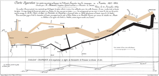

This classic of Charles Joseph Minard (1781-1870), the French engineer, shows the terrible fate of Napolean's army in Russia. Described by E.J. Marey as seeming to defy the pen of the historian by its brutal eloquence, this combination of data map and time-series, drawn in 1869, portrays the devastaing losses suffered in Napolean's Russian campaign of 1812. Beginning at the left on the Polish-Russian border near the Niemen River, the thick band shows the size of the army (422,000 men) as it invaded Russia in June 1812. The width of the band indicates the size of the army at each place on the map. Six variables are plotted: the size of the army, its location on a two-dimensional surface, direction of the army's movement, and temperature on various dates during the retreat from Moscow. Minard does not mention Napolean; the point of the graphic is to memorialize the deaths of the soldiers. It may well be the best statistical graphic ever drawn.